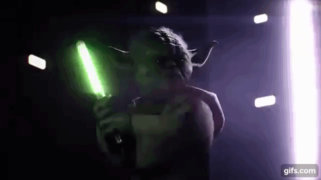
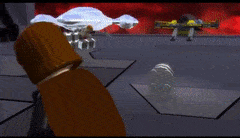
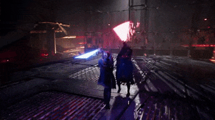

TOP 5 Játék
Saját vélemény
V. Star Wars Force Unleashed
Egy viszonylag régi játékról van szó, ám annál hatásosabb az élmény. A történet Darth Vader tanítványáról, Galen Marekről szól. küldetésünk a fentmaradt Jedik elpusztítása, ám ahogy haladunk előre a történetben, annál bizonytalanabb lesz az út, amin haladunk. A játék során sok „overpowered” képességünk lesz, mint például egy csillagromboló lehúzása az égről.

IV. Star Wars Battlefornt II
Ha a multiplayer játékok megszállottja vagy, és szereted a Star Warsot, akkor ez biztosan tetszeni fog neked. Kedvenc karaktereid bőrébe bújhatsz és gyilkolhatod a droidok, klónók seregét, vagy akár Ewok vadászatba is kezdhetsz. Ha ez még mindig nem lenne elég, a játéknak külön Story módja is van, amiben egy birodalmi pilóta szerepébe is lehetsz.
III. SWGOH
A telefonra kijött Star Warsos játékok legjobbja. A játék közössége nagyon barátságos és segítőkész. Ha szereted az RPG játékokat akkor ez neked való lesz. Feladunk erős csapatok összeállítani a Galaxis létező összes karakteréből, így akár Harcolhatunk a fiatal Anakinnal, a sith Darth Vader ellen is. Az applikáció egy próbát mindenképp megér.

II. Lego Star Wars The Complete Saga
Gyerekkorom kedvence, és egyben a Lego játékok legjobbja. A történet mind a 6 filmet egybefoglalja, és vicces körítéssel tálalja a közönség elé. Az első hat rész összes szereplőjével is lehetünk. A Lego játékokhoz hűen, itt is stud-okat, azaz pénzeket kell összegyűjteni, hogy újabb és ritkább karaktereket tudjunk venni, miközben a történetet játsszuk le.
I. Star Wars Fallen Order
Személyes kedvencem, Single Player játék. A játékmenet összetett és egymásra épülő, a grafika szép, A harc jelenetek meg egyszerűen, fantasztikusra sikeredtek. A történet „A Sith-ek bosszúja” után játszódik jó pár évvel. A főszereplő egy erőérzékeny fiú, névszerint Cal Kestis akinek feladata, hogy újra visszahozza, az elbukott Jedi rendet. A történet során újabb képességekkel erősödünk meg és kalandosabb feladatokat is kapunk.
